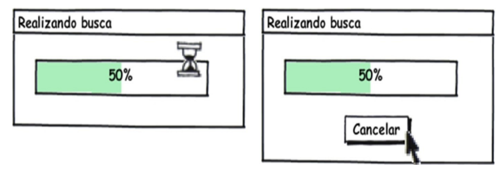

Princípios e Diretrizes Gerais do Design
Trata-se da necessidade de projetarmos um sistema utilizando um modelo conceitual que o usuário possa aprender rapidamente e sem dificuldades. Este modelo conceitual deve auxiliar a interpretar o relacionamento entre as ações e relações apresentadas pelo sistema e o conhecimento no mundo.
Abaixo estão alguns princípios e diretrizes comumente utilizados:
1. Correspondência com a expectativa dos usuários
-
Explorar os mapeamentos naturais, seja entre as variáveis mentais e as físicas, seja entre as tarefas e os controles utilizados para manipular essas variáveis no mundo real e no sistema projetado:
-
Por exemplo, o sistema deve permitir que o usuário encontre o produto desejado antes de se identificar, como ele costuma fazer em lojas físicas:

- Estruturar o diálogo de forma a seguir uma linha de raciocínio e fornecer um fechamento; Seguir as convenções do mundo real, fazendo com que a informação apareça em uma ordem natural e lógica.
2. Simplicidade nas estruturas das tarefas
-
Simplificar a estrutura das tarefas, reduzindo a quantidade de planejamento e resolução de problemas que elas requerem;
-
Para simplificar a estrutura de tarefas, os designers podem seguir quatro abordagens tecnológicas:
- Manter a tarefa a mesma, mas fornecendo diversas formas de apoio para que o usuários consigam aprender a realizar a tarefa;
- Usar tecnologia para tornar visível o que seria invisível, melhorando o feedback e a capacidade do usuário se manter no controle da tarefa;
- Automatizar a tarefa, mantendo-a igual; Modificar a natureza da tarefa;
3. Equilíbrio entre controle e liberdade do usuário
- Mantenha o usuário no controle; Explore o poder das restrições, tanto naturais como artificiais, e projetar restrições para que o usuário sinta como se houvesse apenas uma coisa possível a fazer a coisa “certa”;
- Usuários não devem ficar presos num caminho de interação único para realizar uma atividade;
- Forneça aos usuários uma “saída” clara e rápida, mas deve ser mais fácil se manter “no caminho” do que sair dele inadvertidamente.
- Permita que o usuário cancele, desfaça e refaça suas ações. Isso facilita o aprendizado por exploração

- Quando uma operação considerada perigosa não puder ser desfeita, devemos projetar medidas de segurança para que ela não seja

acionada incidentalmente; - O sistema não deve forçar o usuário a escolher o tempo todo uma quantidade enorme de opções para prosseguir rumo ao objetivo; - Escolha bons valores padrão (defaults) para quando não for necessário incomodar o usuário.
4. Consistência e padronização
- Padronize as ações, os resultados das ações, o layout dos diálogos
e as visualizações de informação:
- Por exemplo: ações semelhantes devem funcionar de modo semelhante;
- Os usuários não devem ter de se perguntar se palavras, situações ou
ações diferentes significam a mesma coisa:
- Por exemplo: utilizar rótulos Salvar e Gravar indiscriminadamente em um mesmo sistema pode confundir o usuário;
- A mesma terminologia deve ser utilizada em perguntas, menus e sistemas de ajuda.
5. Promoção da eficiência do usuário
- Mantenha o usuário ocupado, ou seja, os processamentos demorados não devem impedir o usuário de realizar outras atividades no sistema, deixando o processos rodando em background;
- Proteja o trabalho dos usuários, ou seja, o sistema deve evitar perder ou deixar de salvar algo que o usuário já fez;
- Forneça atalhos e aceleradores, como teclas de atalho e botões na barra de ferramenta.
6. Antecipação das necessidades do usuário
- Tente prever o que o usuário quer e precisa, para fornecer todas as informações e ferramentas necessárias para cada passo do processo;
- Tome iniciativa e forneça informações adicionais úteis, em vez de apenas responder precisamente a pergunta que o usuário tiver feito:

Considere cada alternativa. Ela é eficiente? É neutra? Ou induz a uma determinada opção?
7. Visibilidade e reconhecimento
- designer deve tonar os objetos visíveis: abreviar os golfos de execução e avaliação;
- O estado do sistema, os objetos, as ações e as opções devem estar atualizados e facilmente perceptíveis;
- O usuário não deve ter de se lembrar de informações de uma parte da aplicação quando tiver passado para uma outra parte da aplicação;
- Quando o usuário realiza uma ação, o sistema deve mantê-lo informado sobre o que ocorreu ou está ocorrendo, através de feedback (resposta do sistema) adequado e no tempo certo.
- Em geral, as informações de status podem ser bem sutis;
- Para ações frequentes e com resultado esperado, a resposta pode ser sutil, mas para ações infrequentes e com grandes consequências, a resposta deve ser mais substancial;
8. Conteúdo relevante e expressão adequada
- Projeto estético e minimalista;
- As mensagens de instrução e ajuda devem ser concisas e informativas sobre problemas que ocorrerem;
- Os rótulos de menus e botões devem ser claros e livres de ambiguidade;
- Certifique-se de que o texto também seja legível.
9. Projeto para erros
- Deve ser fácil reverter as operações e difícil realizar ações irreversíveis;
- Ajudar aos usuários a reconhecerem, diagnosticarem e se recuperarem de erros, informando-lhe sobre o que ocorreu, as consequências disso e como reverter os resultados indesejados;

- Não coloque controles de funções utilizadas com frequência adjacentes a controles perigosos ou que raramente são utilizados;
- Exemplo: um botão de inspeção de Propriedades está posicionado bem próximo ao botão para Desabilitar a conexão de rede que, inclusive, efetua a operação sem pedir confirmação do usuário.

| Data | Versão | Descrição | Autor |
|---|---|---|---|
| 14/10/2019 | 1.0 | Criação do documento | Nathalia Lorena |
| 14/10/2019 | 1.1 | Adicionando Princípios e Diretrizes | Nathalia Lorena |
| 16/10/2019 | 1.2 | Ajustes na organização da documentação | Nathalia Lorena |
| 16/10/2019 | 1.3 | Adicionando mais tópicos no documento | Nathalia Lorena |